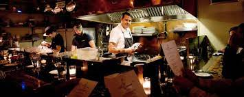
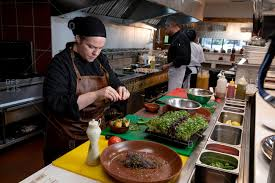
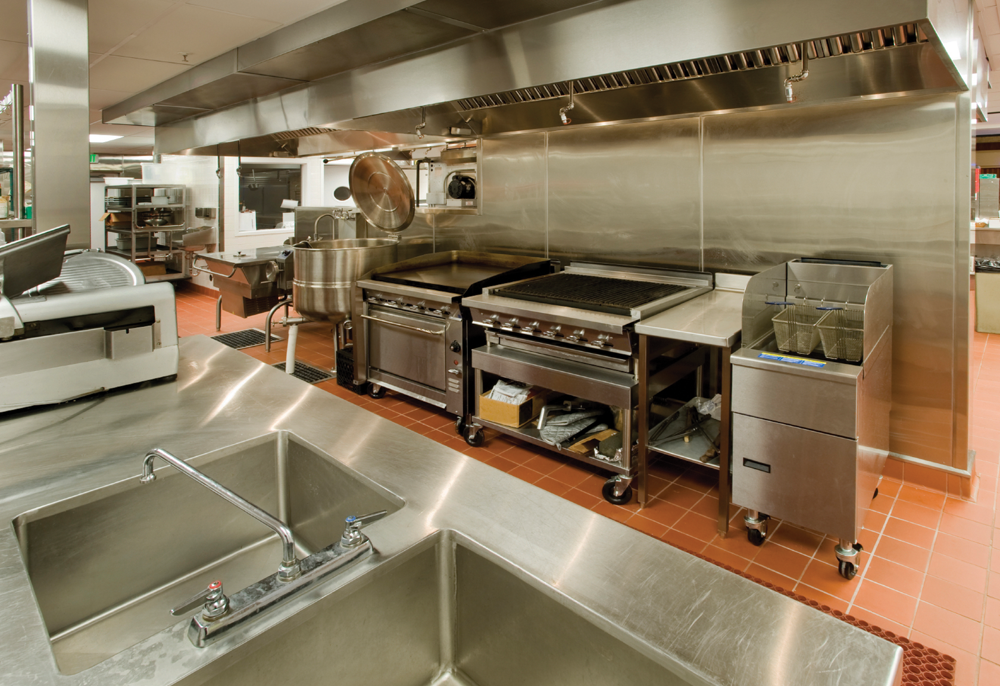
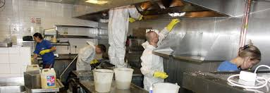
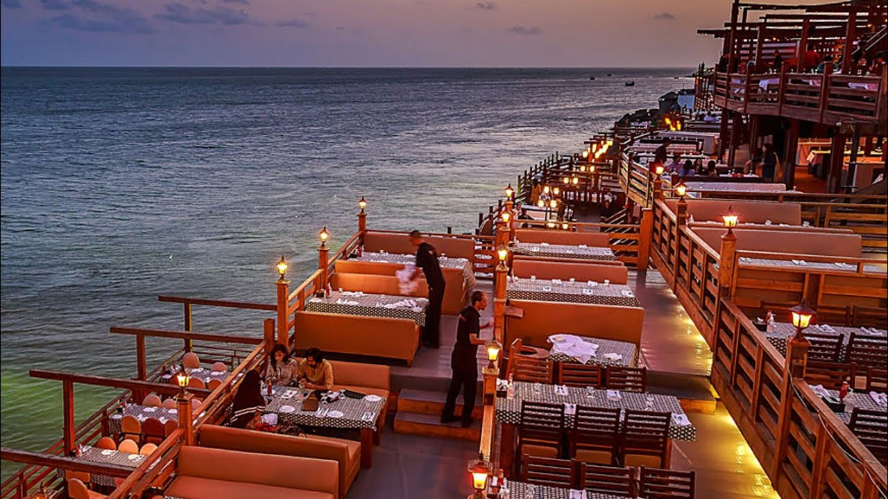

OUR MANAGEMENT

Manager is responsible for overseeing the day-to-day back of house operations and administrative tasks,
they are ultimately responsible for everything that their kitchen produces. In order to produce what they are responsible for (everything), they need
to rely on their team. That team needs to
|
HEALTHY FOOD

Consuming a healthy diet throughout the life-course helps to prevent malnutrition in all its forms
as well as a range of noncommunicable diseases (NCDs) and conditions. However, increased production of processed foods, rapid urbanization and
changing lifestyles have led to a shift in dietary patterns.
|
QUALIFIED CHEF
Becoming a chef involves more than just following a recipe. A chef will be creative in terms of putting a menu together, how the dish looks
on the plate, and how it tastes to the customers. They will also be creative in planning how the kitchen works. Some chefs will even take charge
of décor, tableware and seating arrangements in the restaurant.
|
OUR KITCHEN

If you like to cook, your kitchen work surfaces will see some action, so besides good looks, they need strength and durability,
consider how energy-efficient they are. One thing you can do is look for products with an Energy Star label, a U.S. government-backed symbol of energy
efficiency.Think about how much wear and tear particular areas in
|
CLEAN AND SAFE

A kitchen deep clean can be specially created to help your business abide to these rules and regulations. This could include disposing of food waste
correctly or cleaning your kitchen ventilation. By undertaking a deep clean, you can ensure that you have mitigated as much risk as possible and remove the
possibility of creating an unsafe environment.
|
SITTING AREA

We try to ensure people aren’t sat on top of each other. They have a good amount of space between them. We need to look at that very carefully. If you
have a large table in a dining room you want to make sure they’re away from others. We try not to put small tables in with large ones because they’d just
get overpowered. There are so many elements you have to take into mind,”
|